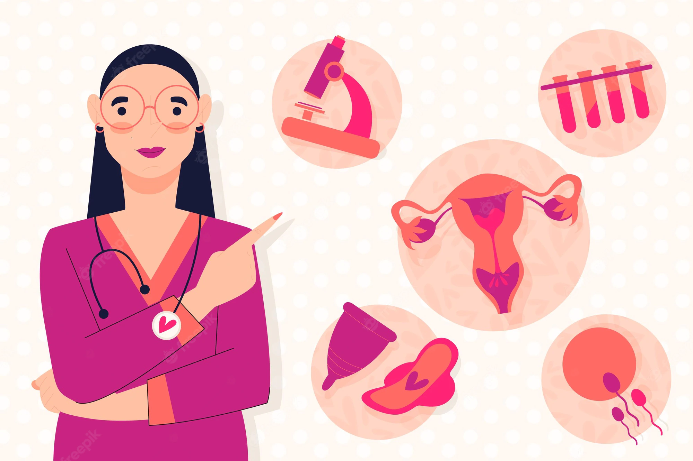

HOSPITAL UNIVERSITARIO VIRGEN DEL ROCÍO

Debe haber un hospital en cada pueblo
ALERGOLOGÍA
La UGC adopta un modelo de centro integral, que incluye, dentro de la misma organización, la prevención, la asistencia, la investigación y formación especializada en Alergología. Abordaje integral de la enfermedad alérgica ofreciendo todos los servicios desde la prevención secundaria, pasando por el diagnóstico, y el tratamiento.

ANATOMÍA PATOLÓGICA
La Unidad de Anatomía Patológica se ocupa del estudio de biopsias (muestras de tejido), piezas quirúrgicas (resecciones) y citologías (extensiones celulares) en las que se espera encontrar ciertas lesiones. El estudio anatomopatológico está destinado a obtener un diagnóstico de dichas lesiones que confirme o revele la naturaleza de la enfermedad. Además, proporciona datos pronósticos (¿cómo es de agresiva la lesión?) y predictivos (¿a qué tratamientos puede responder la lesión?), que ayudan a otros médicos a tomar decisiones respecto al tratamiento más eficaz de la enfermedad. La herramienta diagnóstica básica es el microscopio óptico, pero la unidad también emplea otras tecnologías, como la inmunohistoquímica y las técnicas de patología molecular (análisis molecular aplicado a la anatomía patológica). Adicionalmente, la unidad está encargada de realizar las autopsias clínicas.

ANESTESIOLOGÍA Y REANIMACIÓN
Se conforma en dos Unidades funcionales, los Bloques quirúrgicos del Hospital General (BQHG) y el del Hospital Duque del Infantado (UCMA). La Unidad Funcional del BQHG, presenta una cartera de servicios de cirugía de alta complejidad, incluidas las áreas de urgencias y los programas de trasplantes de nuestro Hospital (Programa de donantes en sus distintas modalidades, programas de implantes renal, hepático, cardíaco y de corneas, etc). Por otro lado, también incorpora en su cartera de servicios la Unidad de Dolor Crónico, localizada en el centro de diagnóstico, Unidad de referencia para la provincia de Huelva, Osuna y Área de Gestión Sanitaria de Valme.
ANGIOLOGÍA Y CIRUGÍA VASCULAR
Su objetivo es la prevención, diagnóstico y tratamiento de las enfermedades de las arterias, venas y linfáticos, para ello contamos con unos profesionales que se esfuerzan en que estos objetivos se cumplan garantizando la excelencia en la asistencia sanitaria que presta. Centramos nuestra atención en protocolos y guías basadas en resultados médico-quirúrgicos sólidos, minimizando la variabilidad, realizando técnicas mínimamente invasivas y fomentando la investigación clínica, enfocada a una excelencia en nuestra práctica diaria asistencial.

APARATO DIGESTIVO
Esperamos que este espacio sea agradable y práctico a toda aquella persona que quiera conocernos, tanto en formato virtual a través de este espacio, como físicamente en el Hospital Universitario Virgen del Rocío (Consultas Externas Especializadas, Endoscopia Digestiva y Pruebas Funcionales en planta baja, y Planta de Hospitalización en cuarta planta Ala Norte), y en el Hospital Duques del Infantado (Consultas Externas Generales, primera planta).

CARDIOLOGÍA Y CIRUGÍA CARDIOVASCULAR
La tramitación del CSUR de cardiopatías congénitas del adulto, área multidisciplinar de la Cardiología, que permite ser centro de referencia nacional de pacientes con esta patología. En ella están implicados múltiples subespecialidades cardiológicas, como la Clínica, Cirugía, Hemodinámica, Imagen, Electrofisiología, etc., lo que confirma y da idea de la complejidad de la patología que se va a abarcar. Nuevas salas de Arritmias y Hemodinámica, Gestión de dispositivos implantables y asistencias ventriculares: incremento del seguimiento monitorización remota, Gestión dispositivos TAVI: Heart Team para pacientes externos a nuestro hospital, Creación del Hospital de Día de Arritmias, Hemodinámica e Insuficiencia Cardiaca, Escopia “0” en procedimientos de ablación.

CIRUGÍA ORAL Y MAXILOFACIAL
A lo largo del año, la UGC de Cirugía Oral y Maxilofacial ha finalizado el proceso de renovación de la acreditación en nivel avanzado por la Agencia de Calidad sanitaria de Andalucía, ACSA, y se ha creado la Unidad Funcional de Cabeza y Cuello compartiendo recursos y zonas de hospitalización con la UGC de Otorrinolaringología. Creación de un CSUR referente a nivel autonómico y nacional en Cirugía de los Fisurados en el Hospital Infantil, continuar líneas abiertas en la investigación del Cáncer de Cabeza y Cuello.

CIRUGÍA ORTOPÉDICA, TRAUMATOLOGÍA Y REUMATOLOGÍA
La Traumatología y Cirugía Ortopédica. Especialidad médica que incluye la valoración clínica, el diagnóstico, la prevención y el tratamiento por medios quirúrgicos y no quirúrgicos, del paciente portador de enfermedades congénitas y adquiridas, de deformidades y de alteraciones funcionales traumáticas y no traumáticas del aparato locomotor y sus estructuras asociadas. La Reumatología. Especialidad médica que incluye el estudio, diagnóstico y tratamiento de las enfermedades del aparato locomotor o musculoesquelético y las enfermedades del tejido conectivo.

CIRUGÍA PEDIÁTRICA
La sección de Digestivo se encarga de la patología quirúrgica del tracto digestivo y coloproctología, además de un Laboratorio de Pruebas Funcionales Digestivas referente en Andalucía. La sección de Vía Aérea y Cirugía Torácica es referente en España por su manejo de pacientes con patología compleja laringotraqueal en toda la edad pediátrica. La sección de Cirugía Oncológica Pediátrica es referente para tumores renales del Grupo Español de Tumores Renales de la Sociedad Española de Hematología y Oncología Pediátrica y participante en los CSUR de Neuroblastomas y Sarcomas. La sección de Urología Infantil, se encarga de la patología urológica quirúrgica, participando, entre otras cosas, en diferentes proyectos a nivel andaluz como el trasplante renal infantil y el manejo de pacientes con patología vesical compleja. Además se encarga de los estudios urodinámicos, contando con un nuevo equipo y ubicación del mismo.
UNIDAD CUIDADOS INTENSIVOS (UCI)
Esta UGC centra su oferta de servicios en la monitorización activa y tratamiento intensivo de los siguientes grupos de pacientes con riesgo vital o potencial: Coronarios, Sépticos, Postquirurgicos, Pacientes médicos, Grandes Quemados, Neurotraumatizados, incluyendo lesionados medulares, Politraumatismos de cualquier causa externa, Trasplantados, Ataques cerebrovasculares.

DERMATOLOGÍA
La Unidad de Gestión Clínica de Dermatología se ha consolidado durante el año 2017 como un referente en la oncología cutánea, con la incorporación de la microscopía confocal exvivo de tumores cutáneos, la integración de la unidad de linfomas cutáneos al Grupo Español de Linfomas Cutáneos y el acceso casi completo de la población de referencia a la teledermatología; así como en la dermatología pediátrica y malformaciones vasculares y psoriasis.
ENDOCRINOLOGÍA Y NUTRICIÓN
Centramos nuestra atención en protocolos y guías basadas en resultados en salud, impulsando la educación terapéutica, minimizando la variabilidad, realizando técnicas mínimamente invasivas y fomentando la investigación clínica, enfocada en la mejora continua (a una excelencia) en nuestra práctica diaria asistencial.

ENFERMEDADES INFECCIOSAS, MICROBIOLOGÍA Y PARASITOLOGÍA
En las últimas décadas han aparecido, de manera consecutiva, nuevos tipos de pacientes, nuevos “huéspedes”: los pacientes con infección por el VIH, los receptores de trasplantes de órganos y de progenitores hematopoyéticos, los pacientes con inmunodeficiencias primarias, los inmigrantes y los viajeros, los pacientes con cáncer en tratamiento con las nuevas terapias inmunomoduladoras, y los pacientes con enfermedades autoinmunes que reciben tratamientos biológicos, que añaden a las infecciones producidas por los patógenos convencionales, las producidas por los microorganismos oportunistas. Y por último se han ampliado los escenarios epidemiológicos clásicos, hospital y comunidad como lugares para la adquisición de infecciones, a las infecciones relacionadas con la asistencia sanitaria y las infecciones en los centros sociosanitarios.

GINECOLOGÍA Y PATOLOGÍA MAMARIA
Aparte de la patología benigna mamaria, la unidad resuelve en torno a quinientos casos de cáncer de mama al año y más de doscientos ginecológicos. Tanto en el diagnóstico como en el tratamiento y seguimiento de las pacientes, procuramos proporcionar el mejor tratamiento posible, con la mayor calidad de vida empleando cirugía mínimamente invasiva (endoscópica, robótica) siempre que nos resulta posible. Llevamos a cabo consultas de prevención del cáncer heredofamiliar, suelo pélvico, patología oncológica, masas anexiales, somos unidad de referencia en tratamiento de endometriosis y muchas otras actividades que se describen en nuestra cartera de servicios.
HEMATOLOGÍA
La hematología es la especialidad médica (rama de la medicina interna) que se dedica al tratamiento de los pacientes con enfermedades de la sangre o hematológicas, su campo de actuación es el diagnóstico, tratamiento, estudio e investigación de la sangre y los órganos hematopoyéticos (médula ósea, ganglios linfáticos y bazo) tanto sanos como enfermos.

LABORATIOS
La UGC de laboratorios clínicos está ubicada en el edificio de laboratorios del complejo hospitalario HUVR. Está integrada por el Servicio de Bioquímica Clínica y el Servicio de Inmunología. El Servicio de Bioquímica Clínica cuenta con 8 secciones, 14 facultativos y 95 TEL. El Servicio de Inmunología cuenta con 4 secciones, 6 facultativos y 17 TEL.

MEDICINA FÍSICA Y REHABILITACIÓN
Esta Unidad tiene como misión la atención a las personas con discapacidad leve, moderada o severa, reversible o irreversible ligada a una de las tareas fundamentales del Hospital de Rehabilitación y Traumatología, la atención a los traumatismos graves y sus secuelas.

MEDICINA MATERNOFETAL, GENÉTICA Y REPRODUCCIÓN
El desarrollo del Programa de Medicina y Terapia Fetal ha ido evolucionando hacia un modelo que hoy incluye el consejo genético pre y posnatal, el diagnóstico prenatal, la medicina, la terapia y la cirugía fetal. Nuestro grupo ha desarrollado procedimientos de terapia fetal de alta complejidad avalando la experiencia profesional con ponencias y publicaciones nacionales e internacionales en diagnóstico prenatal, medicina, terapia y cirugía fetal. En 2017 se produjo el nacimiento tras PGD-HLA del tercer bebé libre de enfermedad hereditaria y compatible para trasplante de progenitores hematopoyéticos a su hermano enfermo.